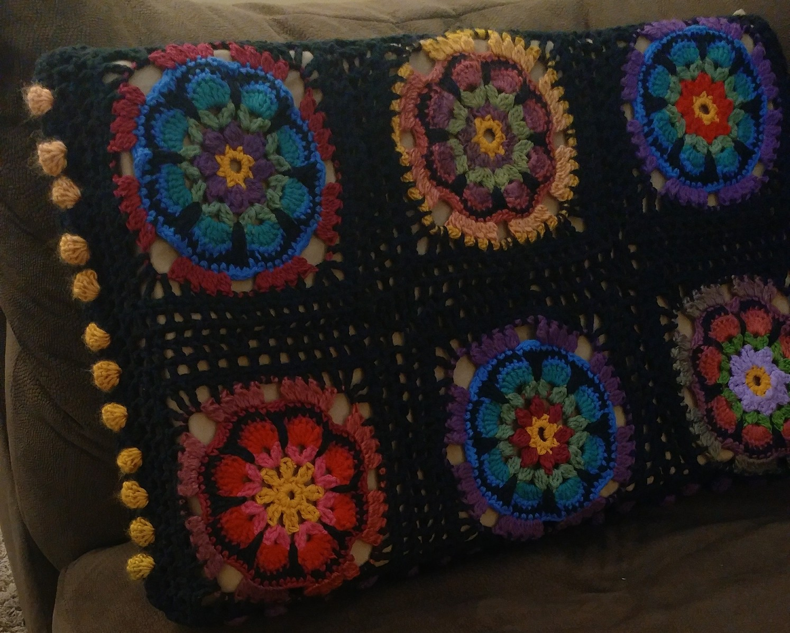

Cultural Object
Writing prompt:
"Bring an object to class that tells about your culture. Share with class members the importance of the object to your culture. It can be a physical object, a picture of the object or other rendition of your culture, clothing, food or recipe, plant, example of music or dancing. Be creative."
My cultural object is a crochet pillow cover I made. The cultural trait it shows is a love of learning. As a child, when I was fascinated by something my mother was doing, she would teach me something about it. If she was reading the newspaper, I would sit on the floor looking up at the front page while she read the inside. Then we would talk about the articles. When she was knitting or crocheting something, I would ask her to show me, and slowly and carefully she showed me how to make the stitches and hold the yarn. She also infected me with her love of color. But what is interesting here is not the object so much as the way the ability to make it came to me. My mother had been taught the same way by her mother, one stitch at a time, making practice squares, then ripping them out to do again for more practice. Who taught my grandmother? Probably her mother! And my son and daughter have learned from me, continuing the tradition.